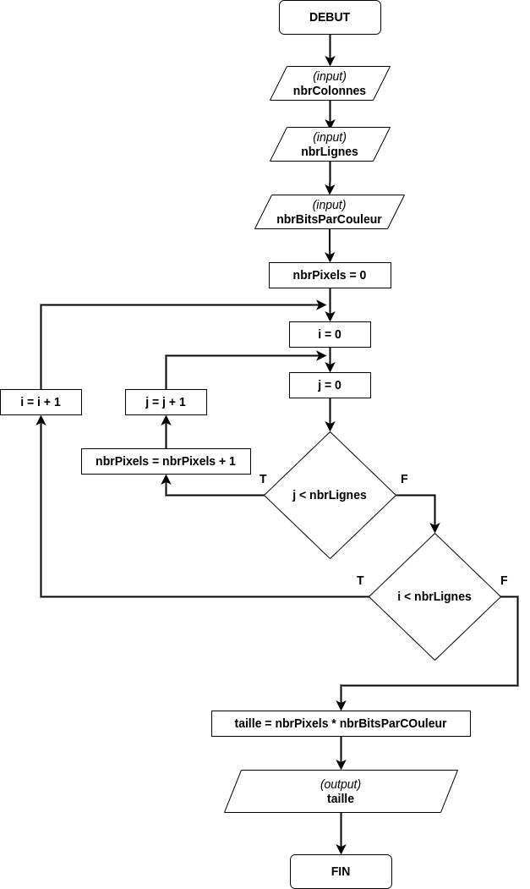
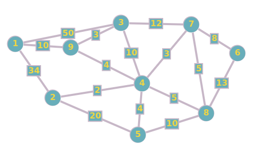

R1-ALGO-03 : Révision
Contents
R1-ALGO-03 : Révision#
Objectifs du test#
Complexité
Taille du problème
Classes de complexité d’algorithmes
Graphes
Algorithme de Dijkstra
Algorithme glouton sur le voyageur de commerce
Matrice d’adjacence
Complexité (algorigramme)#
Voici un algorigramme

Que fait cet algorithme ?#
Décrivez à quel type de problèmes cet algorithme peut répondre (en français)
Quelles sont les entrées de l’algorithme ?#
Décrivez chacune des entrées. Lesquelles de ces entrées sont dominantes pour calculer la classe de complexité de l’algorithme
Quelle est la classe de complexité de l’algorithme ?#
Quelle est la classe de complexité de l’algorithme en notation Big O. Si nbrLignes = 100, nbrColonnes = 200 et nbrBitsParPixel = 24, quelle sera la valeur de sortie de l’algorithme ?
Complexité (programme Python)#
Voici un programme Python :
n = 20 # Limite supérieure pour a, b, c
for a in range(1, n):
for b in range(a, n): # b >= a pour éviter les doublons
for c in range(b, n): # c >= b
if a**2 + b**2 == c**2:
print(a,b,c,"respectent la règle")
3 4 5 respectent la règle
5 12 13 respectent la règle
6 8 10 respectent la règle
8 15 17 respectent la règle
9 12 15 respectent la règle
Que calcule ce programme ?#
Décrivez de quel type de problème set algorithme peut répondre (en français)
Quelles sont les entrées de l’algorithme ?#
Décrivez chacune des entrées. Lesquelles de ces entrées sont dominantes pour calculer la classe de complexité de l’algorithme
Quelle est la classe de complexité de l’algorithme ?#
Quelle est la classe de complexité de l’algorithme en notation Big O. Si n = 100, quelle sera la valeur de sortie de l’algorithme ?
Graphes#
Voici un graphe :

Calculez la matrice d’adjacence#
Donnez la matrice d’adjacence du graphe
Calculez l’arbre couvrant depuis le sommet 2 et celui du sommet 4#
A l’aide d’un stylo gras, dessinez les abres couvrants